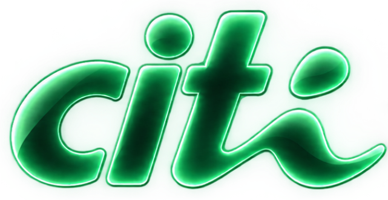

Produto · Proposta para Validação (#9)
Percurso Lead → Projeto → Squad → Subárea → Integrantes · Liquid Glass · Cena 3D + Fallback Estático
Cena 3D: Ativa
Desktop (1280px)
Celular (360px)

central
01
Leads
02
Projetos & Squads
03
Subáreas
04
Integrantes
∑
Esteira & Médias
PROPOSTA VISUAL